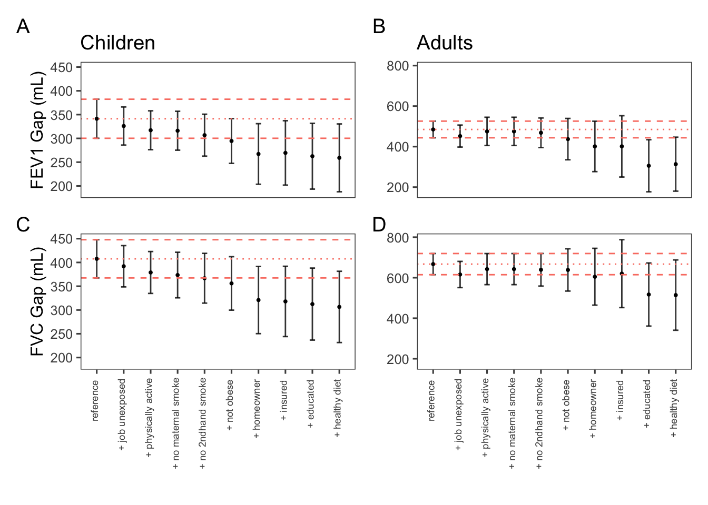
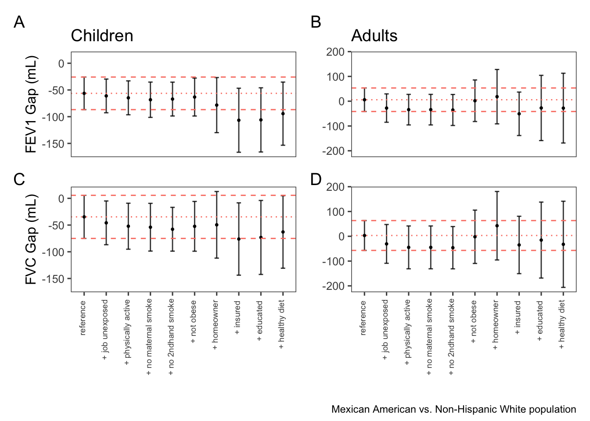
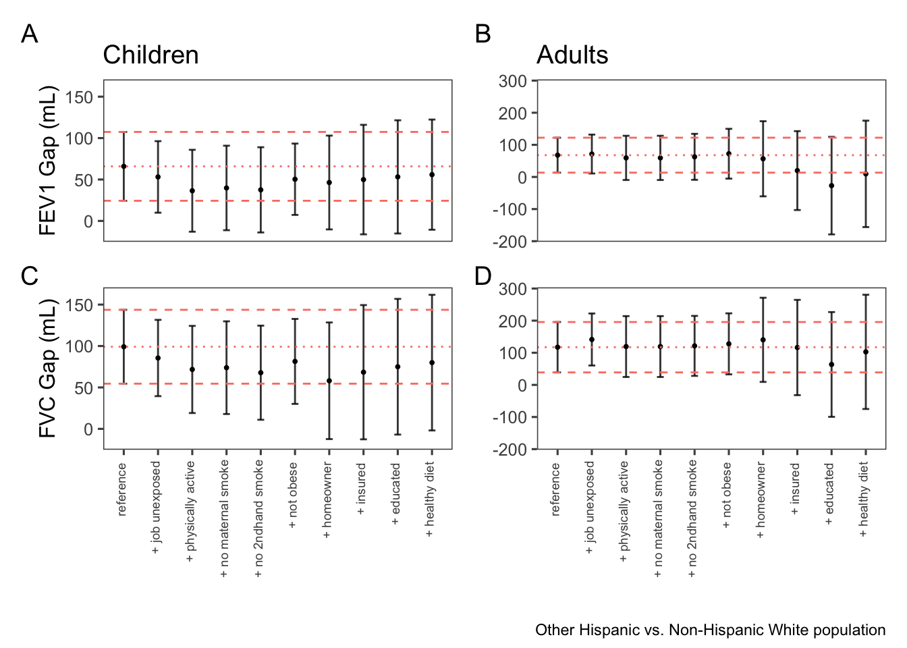
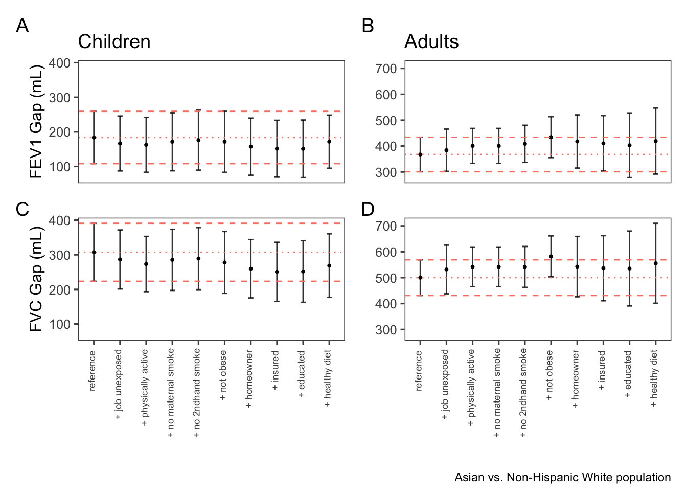

![]()
flowchart TD
B[n=30,442] -- Excluded missing FEV1 or FVC --> C[n=20,050]
C -- Excluded low quality spirometry --> E[n=17,032]
E -- Excluded smokers and those with respiratory diagnoses or symptoms --> F[n=8,802]
F -- Adults --> A0[n=4,832]
F -- Children --> Y0[n=3,970]
Social determinants and racial disparities in lung function: Findings from NHANES 2007-2012
Abstract
RATIONALE: Racialized populations disproportionately experience exposures that impair lung function. Race-averaged reference equations are intended to mitigate bias due to disproportionate exposures at the cost of reduced precision. We hypothesized that the disproportionate impact of social determinants of health (SDoH) captured in survey data could help explain a larger proportion of racial gaps in lung function than previously reported.
METHODS: We defined a series of nested reference populations using data from NHANES 2007-2012 participants. Starting with non-smokers without respiratory symptoms or diagnoses, we sequentially excluded those with confirmed occupational exposure to dust/fumes, physical inactivity, maternal tobacco use, obesity, no home ownership, no insurance, lower education, and self-reported unhealthy diet. Across successive populations, we compared average age-, sex-, and height-adjusted differences in FEV1 and FVC between minority race and ethnicity groups and White participants, separately for adults (≥20) and children (6-19).
RESULTS: In successively healthier populations, the proportion of participants declined for non-Hispanic Black, Mexican American, and Other Hispanic populations but remained close to the reference population for Asian and Other/Multiracial participants. After excluding individuals with unfavorable SDoH, the gap between non-Hispanic Black and White Americans in FEV1 and FVC reduced by 25% and 26% in children and 26% and 19% in adults. The gap between Asian and White Americans reduced by 7% and 13% among children but increased by 14% and 11% among adults. At baseline, Mexican Americans had slightly higher adjusted FEV1 and FVC than non-Hispanic White Americans, and excluding those with unfavorable SDoH increased this gap.
CONCLUSIONS: The SDoH investigated herein disproportionately affected Black, Mexican American, and Other Hispanic populations, and explained a higher proportion of racial disparities in lung function than previously reported.
Background
Racial disparities in lung function measurements have been documented since the late 18th century. Initially, pro-slavery scientists in the US weaponized differences in lung function to justify White supremacy [1]. Over time, this overtly racist misuse was replaced with the notion that racial differences in lung function were innate but benign, often attributed to anthropometric variations [2, 3]. In the 20th century and with the growing adoption of pre-employment spirometry as a test of fitness for certain workers, occupation standards in the US proposed race-based adjustment of spirometry results to prevent hiring discrimination against Black individuals [4]. Subsequently, in 2005, the American Thoracic Society (ATS) and the European Respiratory Society (ERS) recommended race-specific reference equations for interpreting pulmonary function tests in clinical settings [5].
In the past two decades, race-based lung function reference values have been widely used to guide diagnosis, assessment, and management of lung diseases, determine priority for lung transplantation, evaluate fitness for employment, and assess occupational health and insurance claims. However, there is increasing awareness of how these practices may perpetuate racial bias and exacerbate health disparities, especially considering the disproportionate environmental exposures faced by racialized populations [6]. Emerging literature indicates that Black individuals in the US may experience harmful environmental exposures that adversely affect lung growth and function [7]. Race-based normalization of lung function may overlook these issues, potentially leading to the underdiagnosis and inadequate treatment of respiratory diseases in underserved communities.
Spirometry reference equations are developed with data from “healthy” volunteers, who do not smoke, are asymptomatic, and have not been diagnosed with lung diseases [8, 9]. This broad definition could introduce bias, as the reference populations may reflect systemic differences in lung function across racial groups not necessarily because of biological factors but rather due to unequal environmental or social conditions.
The effects of social determinants of health (SDoH) on lung function have been recognized for decades [10–12]. A 1986 review of between-individual variation in forced vital capacity (FVC) attributed up to 30% of variation to biological sex, up to 30% to age, height, and weight, 10% to race, 3% to measurement error, and 27% to unexplained factors [13]. Our study focuses on what proportion of variability that was historically attributed to race can be explained by SDoH.
Our study aims to determine if a more comprehensive set of SDoH in more recent cycles of the US National Health and Nutrition Examination Survey (NHANES) can explain a larger proportion of lung function disparities. By considering varied definitions of “healthy” in reference populations, we assess the impact of SDoH on racial lung function disparities across different self-identified racial and ethnic groups. We have presented a preliminary version of these results at the 2024 European Respiratory Congress in Vienna [14].
Methods
We used data from three cycles of NHANES (2007-2008, 2009-2010, and 2011-2012), which was designed to be representative of the non-institutionalized civilian population of the US. The unweighted response rates in the three included cycles were 75.4%, 77.3% and 69.5% [15]. Our study population included children aged 6-19 and adults aged 20-80. We included individuals with baseline spirometry that either met or exceeded ATS collection standards.
We carefully reviewed the NHANES variable list and selected SDoH-related variables that could affect lung function. We defined SDoH broadly to include employment and working conditions, income and social status, education, environmental exposures, healthy behaviors, stress, access to healthcare, diet, and housing. We defined 10 increasingly healthier reference populations. Starting from the base reference population of non-smokers with no diagnoses of lung diseases or respiratory symptoms, we sequentially excluded those with confirmed occupational exposures, physical inactivity, maternal smoking, obesity (defined as body-mass-index≥30), no home ownership, no insurance, lower education, and self-reported unhealthy diet.
Occupational exposure was defined as exposure to either mineral dust, organic dust, exhaust fumes, or other fumes at work. Individuals who did not have at least 10 minutes of vigorous or moderate activity in a typical week, either for work or recreationally, were considered physically inactive. Lower educated individuals were defined as adults 20 years of age and older with a high school or a GED degree or lower, and 6-19 years old who were neither in school nor on vacation from school. Individuals who self-reported their dietary health as either poor or fair were considered to have an unhealthy diet. Poverty was measured as the ratio of income to federal poverty levels. We calculated allostatic load score based on twelve commonly used biomarkers, using the method proposed by Liu et al [16].
For each reference population, the racial gap was calculated as the average difference in forced expiratory volume in one second (FEV1) and forced vital capacity (FVC) between minority and majority populations adjusted by age, height, and sex in a linear regression model. We evaluated the reduction in the racial gap separately for children (<20 yrs) and adults (≥20 yrs). The distinction between adults and children was dictated by how NHANES data are collected; for example, the educational level variable is only available for those 20 years of age and older and school attendance is more applicable to children. We repeated the main analysis separately for individuals who self-identified with different minority groups, including Non-Hispanic Black, Asian (only available in NHANES 2011-2012), Mexican American, Other Hispanic, and Other/Multiracial. The analysis was done with appropriate 6-year sampling weights to account for complex survey design.
In sensitivity analyses, we evaluated results separately for males and females and those born inside the US. We also evaluated the proportion of the racial gap in lung function between Black and White participants that can be explained by poverty or allostatic load. To examine the effects of our choice of SDoH variables, we conducted a leave-one-out analysis, where we reproduced the results 9 times, each time leaving one of the SDoH out of the successively defined reference populations.
All data preparation and analysis were performed in R v4.4.2 using reproducible Quarto documents. A fully reproducible analysis code is publicly available at https://github.com/aminadibi/who-is-healthy-anyways/. This study was exempt from the Research Ethics Board at the University of British Columbia related to the use of publicly available data for research and publication.
Results
Participants
Of the 30,442 participants in NHANES 2007-2012, we included 17,032 participants who had high-quality spirometry. Excluding smokers and individuals with respiratory diagnoses or symptoms led to 8,802 participants (Figure 1), including 4,832 adults (57.4% female) and 3,970 children (50.8% female). Participant flow across successive reference populations is provided in the appendix (Figure S1). Characteristics of participants are summarized in Table 1.
Disproportionate Impact of Exposures
From the base reference population to the most restrictive, the number of included participants decreased from 8,802 to 1,921. The proportion of participants decreased from 13% to 7% for Black children, from 11% to 4% for Black adults, from 15% to 10% for Mexican American children, from 10% to 3% for Mexican American adults, from 7% to 5% for Other Hispanic children, and from 6% to 3% for Other Hispanic adults (Figure 3). The reduction in the proportion of participants after excluding those with unfavorable SDoH confirms the disproportionate impact of these factors on Black, Mexican American, and Other Hispanic populations in the US. On the other hand, The proportion of participants remained within 1% of the reference population for participants who identified as Asian or Other/Multiracial.
Non-Hispanic Black Americans
In the baseline reference population, average FEV1 and FVC were 350.5 mL and 418.4 mL higher in White children compared with Black children, after adjusting for age, height, and biological sex at birth. For adults, the adjusted racial gap was 502.6 mL for FEV1 and 686.5 mL for FVC. After excluding those with unfavorable SDoH, the racial gap in FEV1 and FVC was reduced by 86.9 mL (24.8%) and 109.6 mL (26.2%) in children and 132.2 mL (26.3%) and 132.9 mL (19.4%) in adults, respectively (Figure 3).
Mexican Americans
Average FEV1 and FVC were 56.3 mL and 34.7 mL higher in Mexican American children compared to White children, after adjusting for age, height, and biological sex at birth. Mexican American and White adults had similar adjusted FEV1 and FVC at baseline, with differences smaller than 6 mL (Figure S5). Excluding individuals with unfavorable SDoH resulted in higher FEV1 and FVC values for the Mexican American population compared to the White population. Adjusted average FEV1 and FVC values for Mexican American children increased by 38.0 mL (67.5%) and 28.2 mL (81.3%) higher than White children. For adults, average FEV1 and FVC increased by 33.8 mL and 35.6 mL compared to White adults (Figure S5).
Other Hispanic Americans
In the baseline reference population, average FEV1 and FVC were 65.9 mL and 99.1 mL higher in White children compared with Other Hispanic children, after adjusting for age, height, and biological sex at birth. For adults, the adjusted racial gap was 67.8 mL for FEV1 and 117.3 mL for FVC. After excluding those with unfavorable SDoH, the racial gap in FEV1 and FVC was reduced by 10.0 mL (15.2%) and 19.2 mL (19.3%) in children and 58.2 mL (85.9%) and 14.5 mL (12.4%) in adults, respectively (Figure S6) .
Asian Americans
In the baseline reference population, average FEV1 and FVC were 183.8 mL and 307.2 mL higher in White children compared with Asian children, after adjusting for age, height, and biological sex at birth. For adults, the adjusted racial gap was 367.5 mL for FEV1 and 500.1 mL for FVC. After excluding those with unfavorable SDoH, the racial gap in FEV1 and FVC was reduced by 12.1 mL (6.6%) and 38.5 mL (12.5%) in children but increased by 51.8 mL (14.1%) and 55.6 mL (11.1%) in adults (Figure S7).
The appendix includes additional results for Other/Multiracial (Figure S8).
Secondary and Sensitivity Analyses
We conducted additional analyses to further evaluate racial gaps in lung function between Non-Hispanic Black and White Americans.
Biological Sex
In females, excluding those with unfavorable SDoH reduced the racial gap in FEV1 and FVC by 51.6 mL (16.1%) and 66.1 mL (18.6%) in children, and 113.6 mL (26.8%) and 122.2 mL (19.8%) in adults, respectively (Figure S2). In males, excluding those with unfavorable SDoH reduced the racial gap in FEV1 and FVC by 137.3 mL (34.6%) and 171.3 mL (33.8%) in children, and 89.4 mL (14.5%) and 71.0 mL (8.2%) in adults (Figure S3).
Country of Birth
After excluding those with unfavorable SDoH, the racial gap in FEV1 and FVC was reduced by 82.2 mL (24.1)% and 101.1 mL (24.8%) in US-born children, and 171.3 mL (35.4%) and 152.9 mL (22.9%) in US-born adults (Figure S4). Individuals born outside of the US had higher FEV1 and FVC, were less exposed to second-hand and maternal smoking, and reported healthier diets, but had more occupational exposures (Table S2). Non-US-born Black individuals had higher income and were more likely to be covered by health insurance than US-born Black individuals while US-born White participants had higher income and higher insurance coverage that non-US-born White participants (Table S2).
Allostatic Load
The allostatic load score ranged from 0 to 8 among self-identified Non-Hispanic Black and White participants. Excluding participants who had an allostatic load score of 1 or higher reduced the racial gap in FEV1 and FVC by 37.5 mL (10.7%) and 34.6 mL (8.3%) in children and by 105.0 mL (20.9%) and 100.2 mL (14.6%) in adults.
Income-to-Poverty Ratio
Among self-identified Black and White participants, excluding those with income to poverty ratio under five reduced the racial gap in FEV1 and FVC by 13.0 mL (3.7%) and 10.4 mL (2.5%) in children, and 28.2 mL (5.6%) and 2 mL (0.3%) in adults (Figure S10).
Leave-one-out
In the leave-one-out analysis, the proportion of the racial gap explained by SDoH remained consistent except for when diet health was not accounted for, in which case the proportion of racial gaps explained by SDoH was 89.2 mL (25.5%) for FEV1 and 110.5 mL (26.4%) for FVC in children and 148.0 mL (29.5%) for FEV1 and 121.1 mL (17.7%) for FVC in adults (Figure S11 to Figure S19).
Discussion
Our understanding of the contribution of environmental and social factors to racial differences in lung function remains limited. A 2022 systematic review [17] found one representative study on in the US adults [18] and one on children [19]. The study on adults attributed 37.2-39.4% of the racial gap in lung function to sitting height and an additional 6.9-10.6% of the racial gap to poverty index, education, and BMI [18]. In children 8 to 17 years of age, sitting height accounted for 43.1-53.1% of the racial gap, while family head education, poverty index, and serum levels of antioxidant vitamins accounted for an additional 6.9-10.4% of the racial differences [19]. However, these studies were limited, as they only considered lung function disparities between Black and White individuals, evaluated a narrow set of SDoH, and used older NHANES III data collected in 1988–1994.
Our results show that SDoH explain a much higher proportion of racial differences in lung function between Black and White Americans than previously reported [18, 19]. We found that occupational exposures, physical inactivity, maternal and secondhand smoke, obesity, not having health insurance, lower education, and unhealthier diet, together, accounted for 19.4%-26.3% of racial gap in lung function between non-Hispanic Black and White participants and as much as 34.7% of the gap in males under 20. We separately found that excluding participants with higher levels of chronic stress reduced racial gaps in in lung function by 8.3-20.9%, while poverty alone accounted for 0.3-5.6% of the gap.
Importantly, the contribution of various SDoH or anthropometric factors to racial gaps in lung function reported by us and other researchers can sum to more than 100% [20]. There are two reasons behind this. Firstly, the interactions between different causes means that the combined impact of two causes may be either smaller or larger than the sum of their individual effects. Secondly, the influence of these factors could theoretically be substantial enough to fill and reverse the racial gaps in lung function.
Our results are consistent with a growing body of literature that implicates historical and structural inequities in perpetuating health disparities [21–24]. However, considerable variability exists within race categories. Controlling for the same SDoH factors reduced the racial gap more among US-born Black and White individuals. Other studies have reported higher levels of allostatic load, hypertension, and mortality risk among US-born Black individuals compared to Black immigrants [25–27] and among Black individuals born in different parts of the US [28].
Our baseline reference population only excluded individuals with a history of smoking, lung disease, or respiratory symptoms. In this population, age-, sex-, and height-adjusted FEV1 and FVC were highest for Mexican Americans, followed by Non-Hispanic White, Other Hispanic, Asian, and Non-Hispanic Black populations. Introducing nine additional exclusion criteria to reference populations reduced racial disparities in lung function between Black and White individuals, but not for Asian population. Of note, the proportion of Asian people in the successive reference populations remained within 1% of the baseline value, indicating that the investigated SDoH did not disproportionately affect this population.
Developing fair and practical lung function reference equations is challenging because of our limited understanding of complex exposures, lack of good representative data, and diverse applications of pulmonary function tests [29, 30]. Recognizing the good faith efforts of those working diligently to balance feasibility, practicality, and an ideal accounting for all potential biases, one possible way forward, at least for some use cases of spirometry, involves explicitly accounting for the effect of complex exposures. This does not require asking patients for their exposure history or social determinants at the point of care and can be achieved by tightening the inclusion criteria in the reference populations at the reference algorithm development stage. Excluding individuals with unfavorable SDoH ensures a more uniformly healthy reference population across racial identities and reduces bias in the dataset.
Proposals for developing lung function standards using data from participants of “middle-class origin who live and work in clean environments” have appeared in the literature as early as 1984 [31]. Another example is the World Health Organization’s birth to 2-year growth standards, which recruited participants with favorable SDoH to establish ideal growth patterns [32].
To our knowledge, this is the first study to evaluate the contribution of a wide range of SDoH to racial gaps in lung function across multiple groups of race and ethnicity in the US. We used the latest available NHANES data that included spirometry, which makes these results representative of the US population. Our method of successive exclusions in reference populations accounts for potential interactions between different SDoH factors, and avoids the need for statistical assumptions required for multivariable linear regressions with SDoH predictors. Our analysis is open-source and easily reproducible.
There are also important limitations. The true contribution of SDoH to racial gaps in lung function is likely higher that what is reported here, as some aspects of SDoH are not captured in NHANES. Our reliance on NHANES data restricts generalizability beyond the US and limits us to coarse race and ethnicity categories, which could conceal meaningful differences [33]. Included NHANES cycles lack data on altitude, sitting height, life-course exposure to pollutants, and intergenerational effects of exposures that have been shown to affect lung function [34, 35]. Another complicating factor is that racial gaps in lung function are typically adjusted for height even though height itself is affected by SDoH [36, 37].
There is a need for longitudinal studies with diverse and well-characterized international cohorts. Repeated measurements of SDoH and lung function throughout life course can help elucidate the emergence of lung function disparities and associated causal pathways [38].
Conclusions
Our study underscores the significant influence of social determinants of health on lung function and shows that a larger proportion of racial gaps in lung function can be explained by social determinants of health than previously reported. However, we were unable to account for all racial differences in lung function based on measured social determinants of health in NHANES 2007-2012.
Characteristic | Adults | Youth |
|---|---|---|
Age (years), mean (SD) | 43.3 (14.7) | 12.4 (3.8) |
Race and Ethnicity | ||
Mexican American | 928 (10.1%) | 1,055 (15.1%) |
Non-Hispanic Asian | 328 (2.6%) | 186 (1.8%) |
Non-Hispanic Black | 968 (10.6%) | 921 (13.2%) |
Non-Hispanic White | 1,817 (64.8%) | 1,137 (57.8%) |
Other Hispanic | 567 (6.0%) | 467 (6.7%) |
Other Race - Including Multi-Racial | 224 (5.9%) | 204 (5.4%) |
Biological Sex at Birth | ||
Female | 2,772 (55.0%) | 2,016 (50.8%) |
Male | 2,060 (45.0%) | 1,954 (49.2%) |
FEV1 (mL), mean (SD) | 3,306.1 (850.7) | 2,773.0 (1,021.7) |
FVC (mL), mean (SD) | 4,137.9 (1,055.0) | 3,213.9 (1,199.7) |
Smoker in Household | 220 (4.2%) | 477 (11.8%) |
Missing | 20 (0.4%) | 19 (0.5%) |
Maternal smoke during pregnancy (For Children) | 0 (NA%) | 333 (13.0%) |
Missing | 4,832 (100%) | 964 (24%) |
Occupational Exposure to Mineral Dusts | 1,124 (25.4%) | 101 (20.0%) |
Missing | 222 (4.6%) | 3,454 (87%) |
Occupational Exposure to Organic Dusts | 789 (18.5%) | 105 (21.8%) |
Missing | 222 (4.6%) | 3,454 (87%) |
Occupational Exposure to Exhaust Fumes | 799 (18.4%) | 48 (11.0%) |
Missing | 219 (4.5%) | 3,454 (87%) |
Occupational Exposure to Other Fumes | 1,128 (24.9%) | 96 (20.1%) |
Missing | 219 (4.5%) | 3,454 (87%) |
Income-to-Poverty Ratio | 3.3 (1.6) | 2.6 (1.6) |
Missing | 445 (9.2%) | 332 (8.4%) |
Homeowner | 29 (0.4%) | 27 (0.7%) |
Health Insurance | ||
Don't Know | 1 (0.0%) | 12 (0.2%) |
No | 1,200 (17.7%) | 550 (11.0%) |
Refused | 1 (0.0%) | 3 (0.0%) |
Yes | 3,629 (82.2%) | 3,405 (88.8%) |
Missing | 1 (<0.1%) | 0 (0%) |
Education Level for Adults | ||
College graduate or above | 1,495 (40.0%) | 0 (NA%) |
Some college or AA degree | 1,382 (29.4%) | 0 (NA%) |
High school graduate | 930 (18.1%) | 0 (NA%) |
9-11th grade | 543 (7.7%) | 0 (NA%) |
Less than 9th grade | 476 (4.8%) | 0 (NA%) |
Missing | 6 (0.1%) | 3,970 (100%) |
Currently Attending School (for Children) | ||
Between grades | 0 (NA%) | 429 (22.6%) |
In school | 0 (NA%) | 1,928 (77.4%) |
Missing | 4,832 (100%) | 1,613 (41%) |
Self-reported Diet Health | ||
Excellent | 456 (9.9%) | 68 (7.1%) |
Very good | 1,068 (24.4%) | 174 (21.6%) |
Good | 2,133 (44.5%) | 428 (47.0%) |
Fair | 996 (18.1%) | 208 (20.3%) |
Poor | 176 (3.1%) | 42 (4.0%) |
Missing | 3 (<0.1%) | 3,050 (77%) |
Vigorous Activity at Work (10 min/week) | 792 (17.7%) | 165 (11.9%) |
Missing | 0 (0%) | 2,040 (51%) |
Moderate Activity at Work (10 min/week) | 1,713 (38.2%) | 614 (38.9%) |
Missing | 0 (0%) | 2,040 (51%) |
Recreational Vigorous Activity (10 min/week) | 1,364 (32.4%) | 1,164 (63.8%) |
Missing | 0 (0%) | 2,040 (51%) |
Recreational Moderate Activity (10 min/week) | 2,151 (50.0%) | 944 (55.4%) |
Missing | 0 (0%) | 2,040 (51%) |
Body Mass Index (kg/m2), mean (SD) | 28.5 (6.3) | 21.3 (5.5) |
Missing | 15 (0.3%) | 23 (0.6%) |
1Mean (SD); n (unweighted) (%) | ||

References
1
Braun L, Grisson R. Race, Lung Function, and the Historical Context of Prediction Equations. JAMA Network Open [Internet] 2023; 6: e2316128. Available from: http://dx.doi.org/10.1001/jamanetworkopen.2023.16128.
2
Agrawal A, Aggarwal M, Sonnappa S, et al. Ethnicity and spirometric indices: hostage to tunnel vision? The Lancet Respiratory Medicine [Internet] 2019; 7: 743–744. Available from: http://dx.doi.org/10.1016/S2213-2600(19)30204-8.
3
Quanjer PhH, Tammeling GJ, Cotes JE, et al. Lung volumes and forced ventilatory flows. European Respiratory Journal [Internet] 1993; 6: 5–40. Available from: http://dx.doi.org/10.1183/09041950.005s1693.
4
Townsend MC, Cowl CT. U.S. Occupational Historical Perspective on Race and Lung Function. American Journal of Respiratory and Critical Care Medicine [Internet] 2022; 206: 789–790. Available from: http://dx.doi.org/10.1164/rccm.202203-0565le.
5
Pellegrino R. Interpretative strategies for lung function tests. European Respiratory Journal [Internet] 2005; 26: 948–968. Available from: http://dx.doi.org/10.1183/09031936.05.00035205.
6
Vyas DA, Eisenstein LG, Jones DS. Hidden in Plain Sight Reconsidering the Use of Race Correction in Clinical Algorithms. Malina D, ed. New England Journal of Medicine [Internet] 2020; 383: 874–882. Available from: http://dx.doi.org/10.1056/NEJMms2004740.
7
Marciniuk DD, Becker EA, Kaminsky DA, et al. Effect of Race and Ethnicity on Pulmonary Function Testing Interpretation. CHEST [Internet] 2023; 164: 461–475. Available from: http://dx.doi.org/10.1016/j.chest.2023.03.026.
8
Quanjer PH, Stanojevic S, Cole TJ, et al. Multi-ethnic reference values for spirometry for the 395-yr age range: the global lung function 2012 equations. European Respiratory Journal [Internet] 2012; 40: 1324–1343. Available from: http://dx.doi.org/10.1183/09031936.00080312.
9
Bowerman C, Bhakta NR, Brazzale D, et al. A Race-neutral Approach to the Interpretation of Lung Function Measurements. American Journal of Respiratory and Critical Care Medicine [Internet] 2023; 207: 768–774. Available from: http://dx.doi.org/10.1164/rccm.202205-0963OC.
10
Lung Function Testing: Selection of Reference Values and Interpretative Strategies. American Review of Respiratory Disease [Internet] 1991; 144: 1202–1218. Available from: http://dx.doi.org/10.1164/ajrccm/144.5.1202.
11
Hegewald MJ, Crapo RO. Socioeconomic Status and Lung Function. Chest [Internet] 2007; 132: 1608–1614. Available from: http://dx.doi.org/10.1378/chest.07-1405.
12
Steinberg M, Becklake MR. Socio-environmental factors and lung function. South African medical journal = Suid-Afrikaanse tydskrif vir geneeskunde [Internet] 1986; 70 5: 270–274. Available from: https://api.semanticscholar.org/CorpusID:4610119.
13
Becklake MR. Concepts of normality applied to the measurement of lung function. The American Journal of Medicine [Internet] 1986; 80: 1158–1164. Available from: http://dx.doi.org/10.1016/0002-9343(86)90678-9.
14
Adibi A, Carlsten C, Brigham E, et al. The effect of health disparities on racial gaps in lung function. European Respiratory Journal [Internet] Eur Respir J; 2024; 64. Available from: https://publications.ersnet.org//content/erj/64/suppl_68/OA5572.
15
NHANES Response Rates and Population Totals [Internet]. [cited 2025 Jan 5]. Available from: https://wwwn.cdc.gov/nchs/nhanes/ResponseRates.aspx#response-rates.
16
Liu SH, Juster R-P, Dams-O’Connor K, et al. Allostatic load scoring using item response theory. Comprehensive Psychoneuroendocrinology [Internet] 2021; 5: 100025. Available from: http://dx.doi.org/10.1016/j.cpnec.2020.100025.
17
Holland R, Bowerman C, Stanojevic S. The Contribution of Anthropometry and Socioeconomic Status to Racial Differences in Measures of Lung Function. CHEST [Internet] 2022; 162: 635–646. Available from: http://dx.doi.org/10.1016/j.chest.2022.04.017.
18
HARIK-KHAN RAIDAI, FLEG JEROMEL, MULLER DENISC, et al. The Effect of Anthropometric and Socioeconomic Factors on the Racial Difference in Lung Function. American Journal of Respiratory and Critical Care Medicine [Internet] 2001; 164: 1647–1654. Available from: http://dx.doi.org/10.1164/ajrccm.164.9.2106075.
19
Harik-Khan RI. Racial Difference in Lung Function in African-American and White Children: Effect of Anthropometric, Socioeconomic, Nutritional, and Environmental Factors. American Journal of Epidemiology [Internet] 2004; 160: 893–900. Available from: http://dx.doi.org/10.1093/aje/kwh297.
20
Rothman KJ, Greenland S. Causation and Causal Inference in Epidemiology. American Journal of Public Health [Internet] 2005; 95: S144–S150. Available from: http://dx.doi.org/10.2105/AJPH.2004.059204.
21
Nardone A, Casey JA, Morello-Frosch R, et al. Associations between historical residential redlining and current age-adjusted rates of emergency department visits due to asthma across eight cities in California: an ecological study. The Lancet Planetary Health [Internet] 2020; 4: e24–e31. Available from: http://dx.doi.org/10.1016/S2542-5196(19)30241-4.
22
Schuyler AJ, Wenzel SE. Historical Redlining Impacts Contemporary Environmental and Asthma-related Outcomes in Black Adults. American Journal of Respiratory and Critical Care Medicine [Internet] 2022; 206: 824–837. Available from: http://dx.doi.org/10.1164/rccm.202112-2707OC.
23
Gaffney AW, Himmelstein DU, Christiani DC, et al. Socioeconomic Inequality in Respiratory Health in the US From 1959 to 2018. JAMA Internal Medicine [Internet] 2021; 181: 968. Available from: http://dx.doi.org/10.1001/jamainternmed.2021.2441.
24
Levy JI, Quirós-Alcalá L, Fabian MP, et al. Established and Emerging Environmental Contributors to Disparities in Asthma and Chronic Obstructive Pulmonary Disease. Current Epidemiology Reports [Internet] 2018; 5: 114–124. Available from: http://dx.doi.org/10.1007/s40471-018-0149-9.
25
Doamekpor LA, Dinwiddie GY. Allostatic Load in Foreign-Born and US-Born Blacks: Evidence From the 20012010 National Health and Nutrition Examination Survey. American Journal of Public Health [Internet] 2015; 105: 591–597. Available from: http://dx.doi.org/10.2105/AJPH.2014.302285.
26
Brown AGM, Houser RF, Mattei J, et al. Hypertension among US-born and foreign-born non-Hispanic Blacks. Journal of Hypertension [Internet] 2017; 35: 2380–2387. Available from: http://dx.doi.org/10.1097/HJH.0000000000001489.
27
All-cause and cause-specific mortality of immigrants and native born in the United States. American Journal of Public Health [Internet] 2001; 91: 392–399. Available from: http://dx.doi.org/10.2105/ajph.91.3.392.
28
Fang J, Madhavan S, Alderman MH. The Association between Birthplace and Mortality from Cardiovascular Causes among Black and White Residents of New York City. New England Journal of Medicine [Internet] 1996; 335: 1545–1551. Available from: http://dx.doi.org/10.1056/NEJM199611213352101.
29
Adibi A, Sadatsafavi M, Brigham EP, et al. Is achieving a fully race-neutral approach to lung function classification even possible? American Journal of Respiratory and Critical Care Medicine.
30
Diao JA, He Y, Khazanchi R, et al. Implications of Race Adjustment in Lung-Function Equations. New England Journal of Medicine [Internet] 2024; 390: 2083–2097. Available from: http://dx.doi.org/10.1056/NEJMsa2311809.
31
Myers JE. Differential ethnic standards for lung functions, or one standard for all? South African Medical Journal [Internet] 1984; 65: 768–772. Available from: https://journals.co.za/doi/abs/10.10520/AJA20785135_10800.
32
Onis M de, Garza C, Victora CG, et al. The who multicentre growth reference study: Planning, study design, and methodology. Food and Nutrition Bulletin [Internet] 2004; 25: S15–S26. Available from: https://doi.org/10.1177/15648265040251S104 .
33
Movva R, Shanmugam D, Hou K, et al. Coarse race data conceals disparities in clinical risk score performance. Deshpande K, Fiterau M, Joshi S, et al., eds. PMLR; 2023; 219: 443–472. Available from: https://proceedings.mlr.press/v219/movva23a.html.
34
Mahon GM, Koppelman GH, Vonk JM. Grandmaternal smoking, asthma and lung function in the offspring: the Lifelines cohort study. Thorax [Internet] 2021; 76: 441–447. Available from: http://dx.doi.org/10.1136/thoraxjnl-2020-215232.
35
Svanes C, Holloway JW, Krauss-Etschmann S. Preconception origins of asthma, allergies and lung function: The influence of previous generations on the respiratory health of our children. Journal of Internal Medicine [Internet] 2023; 293: 531–549. Available from: http://dx.doi.org/10.1111/joim.13611.
36
KUH D, WADSWORTH M. Parental Height: Childhood Environment and Subsequent Adult Height in a National Birth Cohort. International Journal of Epidemiology [Internet] 1989; 18: 663–668. Available from: http://dx.doi.org/10.1093/ije/18.3.663.
37
Freedman DS, Kettel Khan L, Serdula MK, et al. Secular Trends in Height Among Children During 2 Decades. Archives of Pediatrics & Adolescent Medicine [Internet] 2000; 154: 155. Available from: http://dx.doi.org/10.1001/archpedi.154.2.155.
38
Gaffney A, McCormick D, Bor D, et al. Age of Emergence of Disparities in Asthma Prevalence and Morbidity among US Children. Annals of the American Thoracic Society [Internet] 2024; Available from: http://dx.doi.org/10.1513/AnnalsATS.202310-916OC.
Appendices
Participant Flow Across Successive Reference Populations
Flow of participants across different reference populations
flowchart TD
A1["Adults, n=4,832"] -- Excluded those with occupational exposures --> A2[n=2798]
A2[n=2798] -- Excluded those not physically active --> A3[n=1835]
A3[n=1835] -- Excluded those with maternal smoking exposure --> A4[n=1835]
A4[n=1835] -- Excluded those with second-hand smoking exposure --> A5[n=1761]
A5[n=1761] -- Excluded obese individuals --> A6[n=1258]
A6[n=1258] -- Excluded those who did not own thier home --> A7[n=816]
A7[n=816] -- Excluded those without health insurance --> A8[n=711]
A8[n=711] -- Excluded those who did not ever attend college --> A9[n=571]
A9[n=571] -- Excluded those with self-reported unhealthy diet --> A10[n=514]
Y1["Children, n=3,970"] -- Excluded those with occupational exposures --> Y2[n=3767]
Y2[n=
3767] -- Excluded those not physically active --> Y3[n=3432]
Y3[n=
3432] -- Excluded with maternal smoking exposure --> Y4[n=3116]
Y4[n=
3116] -- Excluded those with second-hand smoking exposure --> Y5[n=2866]
Y5[n=
2866] -- Excluded obese individuals --> Y6[n=2687]
Y6[n=
2687] -- Excluded those who did not own thier home --> Y7[n=1592]
Y7[n=
1592] -- Excluded those without health insurance --> Y8[n=1455]
Y8[n=
1455] -- Excluded those who do not attend school --> Y9[n=1441]
Y9[n=
1441] -- Excluded those with self-reported unhealthy diet --> Y10[n=1407]
Participants Characteristics by Race
Characteristic | Mexican American | Non-Hispanic Asian | Non-Hispanic Black | Non-Hispanic White | Other Hispanic | Other Race - Including Multi-Racial |
|---|---|---|---|---|---|---|
Age (years), mean (SD) | 27.6 (16.0) | 34.5 (17.8) | 30.9 (17.9) | 35.8 (19.6) | 30.5 (17.3) | 31.3 (16.8) |
Biological Sex at Birth | ||||||
Female | 1,057 (52.2%) | 292 (59.0%) | 1,078 (59.0%) | 1,554 (52.8%) | 581 (54.3%) | 226 (52.6%) |
Male | 926 (47.8%) | 222 (41.0%) | 811 (41.0%) | 1,400 (47.2%) | 453 (45.7%) | 202 (47.4%) |
FEV1 (mL), mean (SD) | 3,061.3 (893.3) | 2,755.7 (824.5) | 2,800.2 (834.8) | 3,255.6 (954.0) | 3,024.9 (924.2) | 2,977.1 (894.1) |
FVC (mL), mean (SD) | 3,672.9 (1,107.3) | 3,299.7 (976.1) | 3,371.1 (1,001.9) | 4,032.0 (1,202.8) | 3,636.7 (1,142.4) | 3,601.0 (1,092.4) |
Smoker in Household | 94 (5.0%) | 14 (2.5%) | 246 (11.5%) | 275 (6.7%) | 42 (3.8%) | 26 (3.1%) |
Missing | 8 (0.4%) | 2 (0.4%) | 10 (0.5%) | 9 (0.3%) | 9 (0.9%) | 1 (0.2%) |
Maternal smoke during pregnancy (For Children) | 32 (4.0%) | 6 (5.1%) | 71 (11.3%) | 189 (17.5%) | 17 (4.6%) | 18 (8.0%) |
Missing | 1,154 (58%) | 391 (76%) | 1,238 (66%) | 2,065 (70%) | 678 (66%) | 270 (63%) |
Occupational Exposure to Mineral Dusts | 291 (32.3%) | 27 (8.1%) | 238 (21.9%) | 489 (25.6%) | 132 (27.0%) | 48 (16.2%) |
Missing | 1,008 (51%) | 195 (38%) | 806 (43%) | 1,011 (34%) | 465 (45%) | 191 (45%) |
Occupational Exposure to Organic Dusts | 212 (23.1%) | 27 (7.9%) | 138 (12.5%) | 403 (20.2%) | 80 (15.5%) | 34 (13.6%) |
Missing | 1,010 (51%) | 195 (38%) | 805 (43%) | 1,010 (34%) | 465 (45%) | 191 (45%) |
Occupational Exposure to Exhaust Fumes | 143 (16.0%) | 18 (5.8%) | 204 (18.6%) | 375 (19.2%) | 75 (15.1%) | 32 (11.9%) |
Missing | 1,008 (51%) | 195 (38%) | 805 (43%) | 1,009 (34%) | 465 (45%) | 191 (45%) |
Occupational Exposure to Other Fumes | 265 (27.5%) | 40 (12.6%) | 229 (21.2%) | 506 (25.5%) | 132 (25.0%) | 52 (19.6%) |
Missing | 1,008 (51%) | 195 (38%) | 805 (43%) | 1,009 (34%) | 465 (45%) | 191 (45%) |
Income-to-Poverty Ratio | 1.8 (1.3) | 3.2 (1.6) | 2.4 (1.6) | 3.5 (1.5) | 2.1 (1.4) | 3.0 (1.7) |
Missing | 237 (12%) | 59 (11%) | 163 (8.6%) | 140 (4.7%) | 133 (13%) | 45 (11%) |
Homeowner | 19 (0.9%) | 5 (0.8%) | 12 (0.7%) | 9 (0.3%) | 9 (0.9%) | 2 (0.9%) |
Health Insurance | ||||||
Don't Know | 4 (0.2%) | 1 (0.1%) | 7 (0.3%) | 1 (0.0%) | 0 (0.0%) | 0 (0.0%) |
No | 726 (42.0%) | 71 (14.1%) | 294 (18.7%) | 297 (8.2%) | 284 (31.8%) | 78 (19.8%) |
Refused | 3 (0.1%) | 0 (0.0%) | 0 (0.0%) | 0 (0.0%) | 0 (0.0%) | 1 (0.1%) |
Yes | 1,250 (57.7%) | 442 (85.8%) | 1,588 (81.0%) | 2,656 (91.8%) | 750 (68.2%) | 348 (80.1%) |
Missing | 0 (0%) | 0 (0%) | 0 (0%) | 0 (0%) | 0 (0%) | 1 (0.2%) |
Education Level for Adults | ||||||
College graduate or above | 96 (11.7%) | 178 (56.3%) | 247 (26.6%) | 764 (46.6%) | 95 (17.3%) | 115 (56.2%) |
Some college or AA degree | 202 (23.1%) | 72 (21.6%) | 355 (37.6%) | 560 (30.3%) | 142 (26.4%) | 51 (21.6%) |
High school graduate | 170 (18.7%) | 40 (12.0%) | 222 (22.9%) | 341 (17.3%) | 126 (24.2%) | 31 (12.9%) |
9-11th grade | 188 (21.2%) | 20 (5.1%) | 119 (11.1%) | 119 (4.8%) | 84 (14.3%) | 13 (5.8%) |
Less than 9th grade | 271 (25.4%) | 18 (5.0%) | 25 (1.8%) | 31 (1.0%) | 119 (17.8%) | 12 (3.4%) |
Missing | 1,056 (53%) | 186 (36%) | 921 (49%) | 1,139 (39%) | 468 (45%) | 206 (48%) |
Currently Attending School (for Children) | ||||||
Between grades | 52 (6.9%) | 0 (NA%) | 91 (16.6%) | 219 (28.6%) | 37 (14.2%) | 30 (22.2%) |
In school | 625 (93.1%) | 0 (NA%) | 425 (83.4%) | 542 (71.4%) | 240 (85.8%) | 96 (77.8%) |
Missing | 1,306 (66%) | 514 (100%) | 1,373 (73%) | 2,193 (74%) | 757 (73%) | 302 (71%) |
Self-reported Diet Health | ||||||
Excellent | 63 (5.5%) | 53 (14.9%) | 121 (9.1%) | 214 (10.5%) | 47 (7.2%) | 26 (8.2%) |
Very good | 147 (12.3%) | 120 (31.4%) | 217 (16.6%) | 559 (27.4%) | 128 (17.2%) | 71 (27.5%) |
Good | 520 (45.4%) | 167 (42.8%) | 521 (42.0%) | 914 (44.8%) | 312 (46.7%) | 127 (48.2%) |
Fair | 369 (31.8%) | 36 (9.5%) | 290 (25.7%) | 312 (14.9%) | 160 (25.2%) | 37 (14.3%) |
Poor | 55 (4.9%) | 6 (1.4%) | 74 (6.6%) | 57 (2.4%) | 20 (3.7%) | 6 (1.8%) |
Missing | 829 (42%) | 132 (26%) | 666 (35%) | 898 (30%) | 367 (35%) | 161 (38%) |
Vigorous Activity at Work (10 min/week) | 195 (16.5%) | 27 (6.8%) | 175 (12.7%) | 422 (18.2%) | 99 (15.3%) | 39 (11.5%) |
Missing | 564 (28%) | 78 (15%) | 439 (23%) | 602 (20%) | 248 (24%) | 109 (25%) |
Moderate Activity at Work (10 min/week) | 468 (36.4%) | 93 (21.1%) | 447 (31.5%) | 982 (41.9%) | 237 (33.7%) | 100 (28.1%) |
Missing | 564 (28%) | 78 (15%) | 439 (23%) | 602 (20%) | 248 (24%) | 109 (25%) |
Recreational Vigorous Activity (10 min/week) | 509 (34.8%) | 167 (36.0%) | 548 (37.1%) | 910 (40.1%) | 247 (33.3%) | 147 (42.6%) |
Missing | 564 (28%) | 78 (15%) | 439 (23%) | 602 (20%) | 248 (24%) | 109 (25%) |
Recreational Moderate Activity (10 min/week) | 515 (36.3%) | 220 (52.0%) | 598 (41.5%) | 1,311 (57.0%) | 296 (39.9%) | 155 (44.2%) |
Missing | 564 (28%) | 78 (15%) | 439 (23%) | 602 (20%) | 248 (24%) | 109 (25%) |
Body Mass Index (kg/m2), mean (SD) | 26.2 (6.6) | 23.3 (4.7) | 28.0 (8.2) | 26.2 (6.9) | 26.3 (6.5) | 24.1 (5.5) |
Missing | 7 (0.4%) | 3 (0.6%) | 13 (0.7%) | 10 (0.3%) | 3 (0.3%) | 2 (0.5%) |
1Mean (SD); n (unweighted) (%) | ||||||
Separate Analysis by Biological Sex


Intersection of Race and Country of Birth
We produced results separately for self-identified Black and White person born in the US.

Characteristic | Non-Hispanic Black | Non-Hispanic White |
|---|---|---|
Age (years), mean (SD) | 30.9 (17.9) | 35.8 (19.6) |
Biological Sex at Birth | ||
Female | 1,078 (59.0%) | 1,554 (52.8%) |
Male | 811 (41.0%) | 1,400 (47.2%) |
FEV1 (mL), mean (SD) | 2,800.2 (834.8) | 3,255.6 (954.0) |
FVC (mL), mean (SD) | 3,371.1 (1,001.9) | 4,032.0 (1,202.8) |
Smoker in Household | 246 (11.5%) | 275 (6.7%) |
Missing | 10 (0.5%) | 9 (0.3%) |
Maternal smoke during pregnancy (For Children) | 71 (11.3%) | 189 (17.5%) |
Missing | 1,238 (66%) | 2,065 (70%) |
Occupational Exposure to Mineral Dusts | 238 (21.9%) | 489 (25.6%) |
Missing | 806 (43%) | 1,011 (34%) |
Occupational Exposure to Organic Dusts | 138 (12.5%) | 403 (20.2%) |
Missing | 805 (43%) | 1,010 (34%) |
Occupational Exposure to Exhaust Fumes | 204 (18.6%) | 375 (19.2%) |
Missing | 805 (43%) | 1,009 (34%) |
Occupational Exposure to Other Fumes | 229 (21.2%) | 506 (25.5%) |
Missing | 805 (43%) | 1,009 (34%) |
Income-to-Poverty Ratio | 2.4 (1.6) | 3.5 (1.5) |
Missing | 163 (8.6%) | 140 (4.7%) |
Homeowner | 12 (0.7%) | 9 (0.3%) |
Health Insurance | ||
Don't Know | 7 (0.3%) | 1 (0.0%) |
No | 294 (18.7%) | 297 (8.2%) |
Yes | 1,588 (81.0%) | 2,656 (91.8%) |
Education Level for Adults | ||
College graduate or above | 247 (26.6%) | 764 (46.6%) |
Some college or AA degree | 355 (37.6%) | 560 (30.3%) |
High school graduate | 222 (22.9%) | 341 (17.3%) |
9-11th grade | 119 (11.1%) | 119 (4.8%) |
Less than 9th grade | 25 (1.8%) | 31 (1.0%) |
Missing | 921 (49%) | 1,139 (39%) |
Currently Attending School (for Children) | ||
Between grades | 91 (16.6%) | 219 (28.6%) |
In school | 425 (83.4%) | 542 (71.4%) |
Missing | 1,373 (73%) | 2,193 (74%) |
Self-reported Diet Health | ||
Excellent | 121 (9.1%) | 214 (10.5%) |
Very good | 217 (16.6%) | 559 (27.4%) |
Good | 521 (42.0%) | 914 (44.8%) |
Fair | 290 (25.7%) | 312 (14.9%) |
Poor | 74 (6.6%) | 57 (2.4%) |
Missing | 666 (35%) | 898 (30%) |
Vigorous Activity at Work (10 min/week) | 175 (12.7%) | 422 (18.2%) |
Missing | 439 (23%) | 602 (20%) |
Moderate Activity at Work (10 min/week) | 447 (31.5%) | 982 (41.9%) |
Missing | 439 (23%) | 602 (20%) |
Recreational Vigorous Activity (10 min/week) | 548 (37.1%) | 910 (40.1%) |
Missing | 439 (23%) | 602 (20%) |
Recreational Moderate Activity (10 min/week) | 598 (41.5%) | 1,311 (57.0%) |
Missing | 439 (23%) | 602 (20%) |
Body Mass Index (kg/m2), mean (SD) | 28.0 (8.2) | 26.2 (6.9) |
Missing | 13 (0.7%) | 10 (0.3%) |
1Mean (SD); n (unweighted) (%) | ||
Other Race Groups




Allostatic Load
Biomarkers included were C-reactive protein, white blood cell count, glycohemoglobin, serum albumin, serum creatinine, total cholesterol, high density lipoprotein (HDL), serum triglycerides, BMI, resting systolic blood pressure, resting diastolic blood pressure measurements, and pulse rate. For each of the twelve biomarkers, the participant received a score of 1 if their value was deemed high-risk (i.e., below 25% percentile for HDL and serum albumin and above 75% percentile for other biomarkers) and 0 if low risk. Possible values for allostatic load score ranged from 0 to 12. Excluding participants who had allostatic load score of 1 or higher reduced racial gap in FEV1 and FVC by 37.5 mL (10.7%) and 34.6 mL (8.3%) in children and by 105.0 mL (20.9%) and 100.2 mL (14.6%) in adults.

Income-to-Poverty Ratio
When we excluded participants with income to poverty ratio under five, the proportion of racial gap in FEV1 and FVC that was explained by poverty was 13.0 mL (3.7%) and 10.4 mL (2.5%) in children, and 28.2 mL (5.6%) and 2 mL (0.3%) in adults, and as shown in Figure S10.

Leave-one-out Analysis
Changes in lung function racial gaps between Non-Hispanic Black and Non-Hispanic White participants in successively more restrictive reference populations. In each of the figures below, one of the original SDoH-based exclusion criteria are left out. Lung function differences are adjusted for height, age, and biological sex at birth. Positive values indicate higher lung function in the Non-Hispanic White population.


Leave-one-in Analysis
NHANES N (excluding missing or low quality spiro: 17032NHANES included races N (excluding missing or low quality spiro: 10457adult-NHANES : 7533Adult counts:c(2785, 1566, 2091, 2785, 2634, 1698, 1962, 2358, 1926, 2181)NHANES N (excluding missing or low quality spiro: 17032NHANES included races N (excluding missing or low quality spiro: 10457youth-NHANES : 2924Youth counts:c(2058, 1951, 1890, 1798, 1688, 1888, 1215, 1886, 2002, 1928)